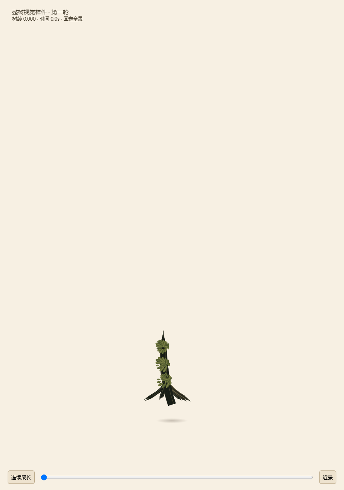
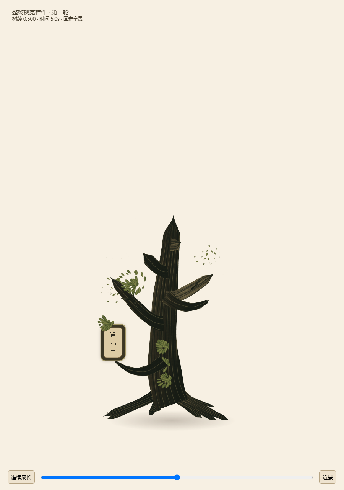
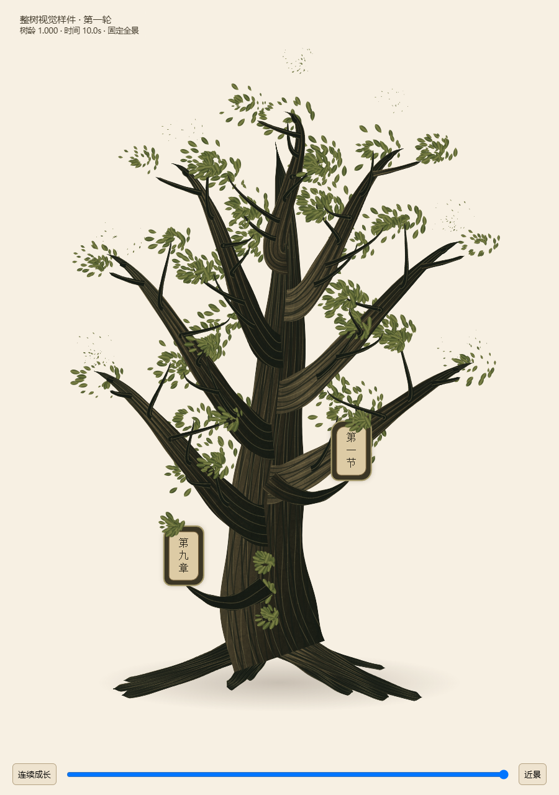
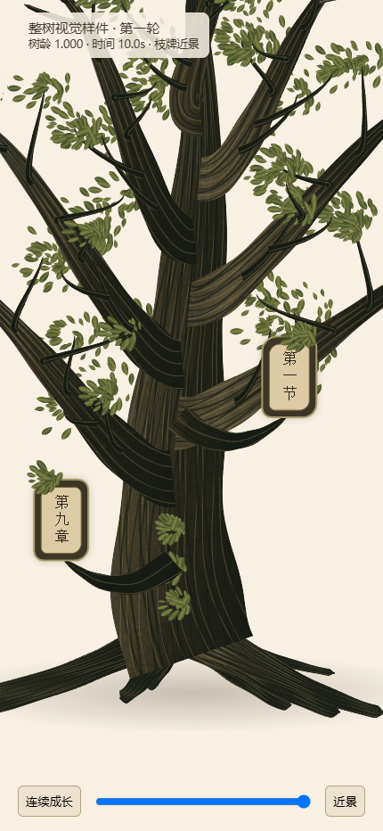

第一轮整树样件 · 视觉未通过
本页是失败审查证据，不是正式页面。四图由同一绘制器生成，近景使用430×932阅读尺度；短片只包含固定相机下0到1的连续成长。
主要失败：木质条带化、根颈平切及幼苗接地不足、散叶与悬浮叶簇、圆角框代替自然木牌。完整审查和第二轮条件
幼苗 · 树龄0
中龄 · 树龄0.5
成熟 · 树龄1
真实曲线承托枝牌近景 · 尚未达到自然木牌质量
连续成长录像
独立Canvas2D造型验证；不是Flutter运行效果，不作为性能或交互验收。绘制源哈希与采集结果